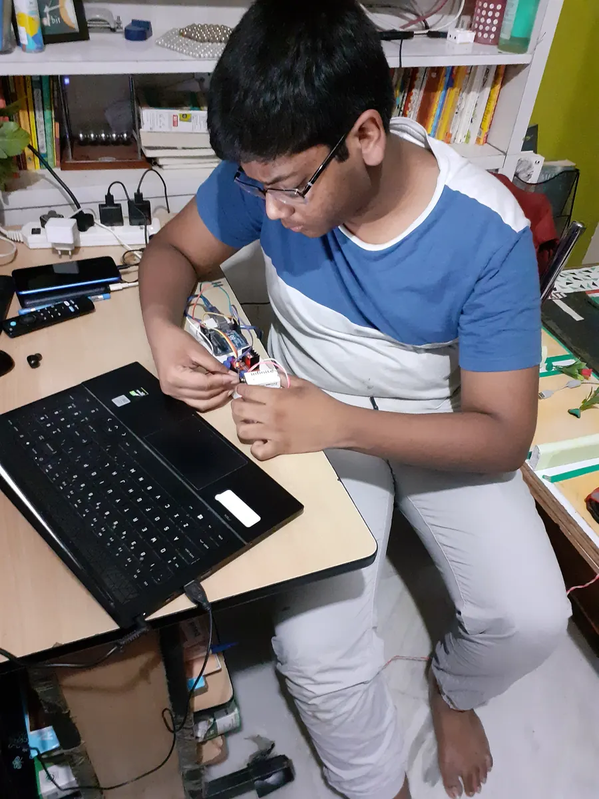

PythonC++OpenCVYOLOMediaPipePyTorchReactDjangoFlaskFirebaseFusion 360ArduinoEmbeddedNext Gen Camera
Python, C++, OpenCV, YOLO, MediaPipe, PyTorch, React, Django, Flask, Firebase, Fusion 360, Arduino, Embedded systems, Next Gen Camera.
(01)Portfolio — selected work
Projects
150+Projects built since class 6
Hover a project for a live preview — click for the full case study.Tap a project for the full case study.
Showing 6 of 18 featured projects · 150+ built
Vinhack · ai agentfurti_ai · autonomous desktop agent
01Autonomous desktop agent
Furti AI :Beyond the Browser
An autonomous desktop agent that handles repetitive workflows across software, using a token-efficient vision pipeline and TypeSafe AI Jev for structured decisions.
An AI security layer for existing CCTV - spots robbers, fire, faints, faces & anomalies in real time and acts (buzzer + calls/alerts) instead of just recording.
opencv
deep-learning
embedded
Shipped & livejee_horizon · full-stack · ai e-learning
03Full-stack · ai e-learning
JEE Horizon: AI E-Learning Platform
A live platform where students solve practice questions, get AI help when they're stuck, and compete against each other on the leaderboard. Shipped and running in production.
react
firebase
ai
Paid clientai_property_auto · highly advanced · uk real estate
04Highly advanced · uk real estate
AI Property Auto-Furnish Image Generator
Empty rooms in, photorealistic AI-staged interiors out a paid, end-to-end generative pipeline delivered for a UK real-estate client.
client-work
generative-ai
deep-learning
Advanced · cvfull_match_ball_tracker_scor · football analysis
05Football analysis
Full Match Ball Tracker & Score Analyzer
YOLOv8 tracks every player and the ball in real time, with a live score and tactical overlay.
yolo
opencv
tracking
1st prize · iit delhinext_gen_parking · classical cv · no ml
06Classical cv · no ml
Next Gen Parking: Single-Camera Smart Parking
One camera replaces a sensor per parking spots real-time free/occupied detection using pure classical computer vision. No neural network anywhere in the pipeline, and that’s the point.
A MediaPipe pose engine that recognises and counts 12+ exercises with live form feedback.
pose-estimation
mediapipe
Medium · aireal · surveillance ai
08Surveillance ai
Real-Time Violence Detection System
Deep-learning CNNs flag violent motion in live video for real-time security alerting.
cnn
video-classification
Cv · aihuman_pose_estimation · body tracking
09Body tracking
Human Pose Estimation
33-point skeletal tracking in real time, the foundation of my sports-AI systems.
mediapipe
skeleton
Built at 14ai_virtual_teacher · 2021 · speech + tts
102021 · speech + tts
AI Virtual Teacher: a Voice “Video Call”
Speech recognition, an intent matcher and TTS running as separate processes passing messages through files — I reinvented message queues before I knew threads existed. Preserved as originally written.
python
speech
multiprocessing
Advanced · cvface_segmentizer · segmentation
11Segmentation
Face Segmentizer — Auto Passport Photo
Deep segmentation auto-crops faces to regulation passport photos from any background.
segmentation
face-detection
Medium · cvdocument_scanner_with_full_g · desktop app
12Desktop app
Document Scanner with Full GUI
An OpenCV edge-detection scanner with a full desktop GUI — angled photos to clean, flat scans.
opencv
tkinter
Open sourcefoci · desktop app · windows
13Desktop app · windows
Foci — Study Planner & Focus App
Daily timeline, focus timer, lofi player, stats and rewards across 8 themes — built to run my own discipline system, then shipped with a landing page.
python
pygame
desktop
Cvreal · real-time
14Real-time
Real-Time Motion Detection
Frame-differencing motion detection on live webcam feeds, running at 60+ FPS.
opencv
frame-diff
Complex · 3dsquid_game_3d · python 3d engine
15Python 3d engine
Squid Game 3D — Full Game in Python
Red Light, Green Light rebuilt as a full 3D game — entirely in Python with the Ursina engine.
A 2D platformer with real-time socket multiplayer, a physics engine and enemy AI — built in Pygame.
pygame
sockets
multiplayer
Graphicsopengl_3d_rendering_demo · gpu rendering
17Gpu rendering
OpenGL 3D Rendering Demo
Real-time GPU rendering with custom GLSL shaders, lighting and camera controls in OpenGL.
opengl
shaders
Paid clientclient_website · web development
18Web development
Client Website — Full Build
A complete responsive website designed, built and shipped end-to-end for a paying client.
html
css
javascript
(02)Recognition
Awards
Competitive wins on national and international stages.
team · 1st prize
Frame 01 / 11VIT Vellore — 19 Sep 2026
01
1st prize · Hackathon
VinHack 2026 — 1st Prize
VIT Vellore — Gravitas 2026 · Flagship hackathon by VinnovateIT · 19 Sep 2026
Two months into my freshman year, my team took 1st prize at VinHack 2026 — a 30-hour flagship hackathon with 800+ participants, seniors from 3rd and 4th year among them. I led the team and owned the entire architecture and code, solo; we shipped Furti AI, an autonomous desktop-automation agent with a token-efficient CV pipeline.
Place
1st
Participants
800+
Build
30h
Shipped
Furti AI
02Bihar Innovation Challenge — 1st PrizeGovernment of Bihar1st place
Government of Bihar — (#BiharHaiTaiyar) · State-Level Engineering Innovation Competition
Won first place at the Bihar Innovation Challenge — a state-level competition where hundreds of innovators competed. Presented the Next Gen Camera to a panel of government judges and received the award on a public stage, along with a MacBook as the grand prize.
1st placeState levelWon macbook
03INEX India Silver Medal — IYIICIndia International Innovation & Invention ExpoInternational expo
India International Innovation & Invention Expo — Indian Young Innovators & Inventors Challenge
Awarded the INEX India Silver Medal at an international-level expo where young innovators from across India competed. Recognized by an international panel of judges for outstanding innovation in computer vision and engineering technology.
04BIT Mesra Patna — Innovation ShowcaseBirla Institute of Technology, MesraRecognized
Birla Institute of Technology, Mesra — — Patna Campus · Innovation Presentation & Recognition Event
Selected to present the Next Gen Camera at BIT Mesra, Patna — one of India's premier engineering institutes. Delivered a full technical presentation and live demonstration of all 5 detection modules to faculty, researchers, and students.
Bit mesraRecognized
05Presented to International ResearchersInternational Innovation ExhibitionTech discussion
International Innovation Exhibition — Engagement with Foreign Research Delegates
International researchers and delegates engaged in detailed technical discussions about the Next Gen Camera's architecture. Explained the CV pipeline, real-time inference approach, and custom-built detection modules to a foreign research panel who expressed strong interest in the innovation.
InternationalTech discussion
06Aryabhat Award, NCSC, Robo Fest & MoreMultiple National CompetitionsNaest 2022
Multiple National Competitions — Science, Engineering & Robotics Events
Beyond the flagship wins: Aryabhat National Award for scientific excellence, National Children's Science Congress, Robo Fest robotics competition, Ingenious Geeks, Inter-School Model Making, and NAEST 2022. Each win validated a different dimension of engineering capability.
Won first prize at the IIT Delhi innovation challenge with a smart parking system where one camera replaces a sensor per parking spot — real-time free/occupied detection built on classical computer vision, presented with a polished physical demo.
Iit delhi1st placeClassical cv
08Robo Fest — 1st PrizeRobo Fest1st place
Robo Fest — Competitive robotics design and execution
Awarded the first prize for a robotics system that excelled in technical execution, reliability, and presentation. The win is backed by the official Robo Fest certificate and a trophy photograph.
Ingenious Geeks — National technology and invention showcase
Recognized by the Ingenious Geeks program for outstanding invention and creative engineering. The certificate backs the project’s innovation strength and practical impact.
Selected to present research at the National Children's Science Congress, demonstrating both technical depth and communication skills. The award reflects strong scientific curiosity and project coherence.
11Inter-School Model MakingInter-School CompetitionCompetition
Inter-School Competition — Physical model design and execution
Recognized for an engineered model that combined creativity with precision. The project was judged on technical accuracy, aesthetics, and presentation quality.
I started coding in class 6 and never really stopped. Today I'm building a humanoid robotics & AI startup.

Builder by natureEst. 2007
I started coding in class 6 and never really stopped. 150+ projects later, that's turned into an award-winning AI surveillance camera I've been building since class 7 (it's won at state, national and international level), and paid computer-vision work for clients around the world.
The other half is the web: I build full-stack products end to end — Django, Flask, React, Firebase — most recently JEE Horizon, a live AI-powered e-learning platform.
Today I'm the founder of AKL Technologies — a humanoid robotics & AI startup — and a freelance CV engineer with 50+ Fiverr clients at a 5.0★ rating.
Projects built since class 6
150+
Fiverr clients worldwide
50+
Average client rating
5.0
Awards for the Next Gen Camera
4×
Finished > perfectNo pain, no gainPonder till eureka— house rules, since class 6
(03)About — the stack
Tech stack
Production tools I work with daily.
01
Computer vision
Detection, tracking & recognition systems in production.
OpenCV
YOLO
MediaPipe
Object Detection
Face Recognition
02
AI & machine learning
Training & deploying machine-learning pipelines end to end.
TensorFlow
PyTorch
Scikit-learn
Deep Learning
03
Full-stack web
Django, Flask, React & Firebase — shipped, live products.
Django
Flask
React
Firebase
04
Hardware & robotics
Humanoid robotics, embedded systems & CAD-driven builds.
Arduino
Fusion 360
Embedded
PCB Design
Python, end to end
NumPy
Pandas
Matplotlib
Pillow
SciPy
Pygame
Ursina
…and whatever else the problem needs. If it can be built in Python, I can build it.
Also ship with
C++
OpenGL
SQL
Git
Linux
(04)Client reviews — Fiverr
What clients say
5.0 rating · all verifiable
“
Amazing Developer. Akshit completed my project within 5 hours instead of 7 days. Highly intelligent.
 Vinhack · ai agent
Vinhack · ai agent